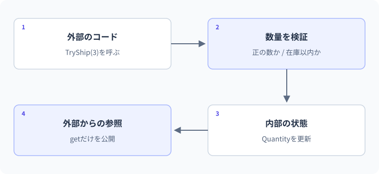

プロパティとカプセル化
在庫を変更する入口。
図解：在庫を変更する入口

要点
- get・private set・initを使い分ける
- 勝手に変更させない状態を設計する
public int Count { get; private set; }概念・構文
C#のプロパティはフィールドを短く書くためだけの機能ではありません。値の読み取りと更新の入口を制御し、外側に公開する契約を作ります。public set、private set、init、getのみの違いを、残高や在庫のルールと結び付けて学びます。
フィールドとプロパティは違う
public int Count { get; private set; }はプロパティです。外部はCountを読めますが、設定できるのは型の内部です。自動実装プロパティではコンパイラーが裏側の保存領域を用意します。単に全フィールドをpublicにするより、後から検証や計算を加えやすくなります。
状態の変更を操作として表す
在庫ならCount = -100を外から許可するのではなく、AddやRemoveで条件を検証して変更します。プロパティを公開しただけでカプセル化できたとは限りません。get/setが何でも許す状態なら、不正なデータが入り込む点はpublicフィールドと変わりません。
initとrequiredの役割
initは主にオブジェクトの初期化時に設定し、その後の代入を制限します。requiredは呼び出し側に初期化を要求するコンパイル時の仕組みです。ただし空文字や不正な範囲まで自動検証するわけではありません。参照先のListをinitで持っても、リストの中身まで不変にはなりません。
プロパティはget/setを持つメンバー
public int Count { get; set; }は自動実装プロパティで、コンパイラーが格納用フィールドを生成します。外側のinventory.Countという記法はフィールドに似ていますが、getやsetというアクセサーを介します。必要に応じて検証や計算を実装でき、公開する名前を保ちながら内部の表現を変更できます。
一方、プロパティのgetterへ時間のかかる通信や状態を破壊する処理を隠すと、単なる値の参照に見えるコードから予想外の副作用が起こります。Total => Price * Quantityのような軽い計算は自然ですが、DB検索や通知はメソッドとして目的を示した方がよい場合があります。構文上可能なことと利用者に理解しやすいAPIは別です。
残高の変更を意味のある操作へ限定する
Balanceにpublic setを付けると、外側から-100の代入や根拠のない上書きができます。private setにしてDepositやTryWithdrawへ操作を絞れば、入金は正の金額、引き出しは残高以内というルールを更新の入口で守れます。単にsetをprivateにしただけで安全になるのではなく、公開メソッドの検証も必要です。
Balance += amountは現在値の読み取りと新しい値の設定です。将来、入金記録や上限検証を加える場合にもDepositという意味のある入口があれば、利用側の呼び出し方を保ちながら変更できます。ただし将来の全機能を予測して過剰な抽象化を加える必要はありません。現在守るべき状態と操作を明確にします。
getのみ・private set・initの時間軸
getのみの自動実装プロパティは、コンストラクターなどで値を設定し、外側からの代入を許しません。private setは型の中の処理から更新できます。initは通常、オブジェクト初期化などの初期化フェーズで設定でき、生成後の通常の代入を制限します。誰がいつ変更できるかという二軸で比べると区別できます。
initだから参照先の中身まで不変というわけではありません。public List<string> Tags { get; init; }なら生成後のTagsの再代入は制限されてもTags.Addは可能です。コレクションを外へ返す場合は、その実体を変更してよいか、読み取り専用の見せ方で十分か、コピーが必要かを別に判断します。
requiredとC# 14のfieldを過信しない
requiredはオブジェクトを作る側にそのメンバーの初期化を要求する機能です。空文字や負数まで自動的に拒否する業務検証ではありません。required string Title { get; init; }へTitle=""を渡すことは、初期化という要求自体は満たします。注釈・初期化要求・業務条件の検証を三つに分けます。
C# 14のfieldを使うと、アクセサー内からコンパイラー生成の格納用フィールドを参照できます。手書きの_nameなどを省けますが、検証の設計が自動化されるわけではありません。明示的なフィールドやprivate setでも、検証とアクセス制御を実装できます。
C#仕様の整理
| 観点 | C#での扱い | 読み方・設計上の要点 |
|---|---|---|
| 値の公開 | Nameプロパティのget/set | 見た目はフィールドでもアクセサーの契約 |
| 更新の制限 | getのみ/private set/initを選べる | 変更時期と変更主体を明示する |
| 初期化要求 | requiredで初期化要求も表せる | 内容の妥当性は別検証 |
| 不変性 | initやreadonlyも深い不変性ではない | コレクションの公開方法を別途設計 |
文法・実例・処理順
var inventory = new Inventory();
inventory.Add(3);
Console.WriteLine(inventory.Count);
public class Inventory
{
public int Count { get; private set; }
public void Add(int amount)
{
if (amount <= 0)
throw new ArgumentOutOfRangeException(nameof(amount));
Count += amount;
}
}想定出力
処理順
- Countは初期値0で始まる。
- Addが正の数量か確認し、Countを3にする。
- 外からはCountを読み取れるが、直接設定はできない。
値・状態の変化を追う
在庫を負数へ落とさない更新
var stock = new Stock();
stock.Add(3);
Console.WriteLine(stock.TryTake(2));
Console.WriteLine(stock.Count);
Console.WriteLine(stock.TryTake(2));
Console.WriteLine(stock.Count);
public class Stock
{
public int Count { get; private set; }
public void Add(int amount)
{
if (amount <= 0) throw new ArgumentOutOfRangeException(nameof(amount));
Count = checked(Count + amount);
}
public bool TryTake(int amount)
{
if (amount <= 0) throw new ArgumentOutOfRangeException(nameof(amount));
if (amount > Count) return false;
Count -= amount;
return true;
}
}出力
| 段階 | 値・状態 | 読み解き |
|---|---|---|
| 初期 | Count=0 | 外部から直接変更できない |
| Add(3) | Count=3 | 正数を確認してから加算 |
| TryTake(2) | 3>=2なのでCount=1、true | 成功した操作だけ状態を更新 |
| 再度TryTake(2) | 1<2なのでfalse、Count=1 | 失敗時は状態を変更しない |
よくある間違いと修正
外部代入で残高が負数になる
修正箇所: Wallet.Balanceの公開setter
修正前
var wallet = new Wallet();
wallet.Balance = -100;
public class Wallet { public decimal Balance { get; set; } }修正後
var wallet = new Wallet();
wallet.Deposit(100m);
Console.WriteLine(wallet.Balance);
public class Wallet
{
public decimal Balance { get; private set; }
public void Deposit(decimal amount)
{
if (amount <= 0) throw new ArgumentOutOfRangeException(nameof(amount));
Balance += amount;
}
}修正後の確認
- 100の入金で残高100
- 負数のDepositは例外
- 外部からBalanceへ代入するコードはコンパイル不可
実例：在庫数を負数にしない設計
発送数量を検証し、在庫不足なら状態を変更しません。
var stock = new Stock(5);
Console.WriteLine(stock.TryShip(3));
Console.WriteLine(stock.TryShip(9));
Console.WriteLine(stock.Quantity);
class Stock
{
public int Quantity { get; private set; }
public Stock(int quantity)
{
if (quantity < 0) throw new ArgumentOutOfRangeException(nameof(quantity));
Quantity = quantity;
}
public bool TryShip(int amount)
{
if (amount <= 0 || amount > Quantity) return false;
Quantity -= amount;
return true;
}
}想定出力
True
False
2処理と値の変化
- 3個を発送5個から3個減り2個になる
- 9個を発送在庫不足なのでfalseを返す
- 失敗後の状態減算していないため2個のまま
0個と-1個の発送もfalseになり、在庫は変わりません。
基礎・標準・応用演習
C#実行環境：.NET 10 SDK
基礎演習
WalletにBalanceを用意し、外部から直接書き換えず、正の金額だけDepositで入金できるようにしてください。1000円の入金を確認します。
開始コード
// WalletクラスとDepositメソッドを作る。入力例・前提条件
残高0のWalletへ1000mを入金する。0や負の入金は拒否する。
考え方のヒント
Balanceを外から読めるが書けない形にし、Depositで金額を検証する。
解答例と確認ポイント
var wallet = new Wallet();
wallet.Deposit(1000m);
Console.WriteLine(wallet.Balance);
public class Wallet
{
public decimal Balance { get; private set; }
public void Deposit(decimal amount)
{
if (amount <= 0m)
throw new ArgumentOutOfRangeException(nameof(amount));
Balance += amount;
}
}| 解答で確認する条件 | 確認方法 |
|---|---|
| 1000と表示され、0以下の入金は拒否される。 | コードと想定結果を照合 |
| wallet.Balance = 1000m;は外部からコンパイルできない。 | コードと想定結果を照合 |
処理と結果の読み解き
外部はDepositを通してのみ増額する。1000なら残高0→1000、無効な金額なら正常な入金として扱わず状態を保持する。
よくある別解と選び方
privateフィールドと読み取り用プロパティでも、private setの自動プロパティでも表現できる。
よくある間違いと確認箇所
エラーを消すためにBalanceのsetterをpublicへ変えると、検証を通らない任意の書き換えを許す。
実務例：公開するデータと、状態を変える操作を分けて不変条件を守る。
標準：計算プロパティを作る
UnitPriceとQuantityをコンストラクターで設定するOrderLineを作り、Totalを計算プロパティとして返します。500円×3個で1500を表示してください。
- 入力の価格と個数を検証する
- Totalは格納せず式から求める
- 元の値はgetのみで公開する
開始コード
// 標準：計算プロパティを作る
// 課題とテストケースを読んで、自分で実装してください。
入力例・前提条件
UnitPrice=500m、Quantity=3。Totalは保持せず計算する。
考え方のヒント
Totalのgetまたは式形式でUnitPrice*Quantityを返す。
解答例と確認ポイント
var line = new OrderLine(500m, 3);
Console.WriteLine(line.Total);
public class OrderLine
{
public decimal UnitPrice { get; }
public int Quantity { get; }
public decimal Total => UnitPrice * Quantity;
public OrderLine(decimal unitPrice, int quantity)
{
if (unitPrice < 0) throw new ArgumentOutOfRangeException(nameof(unitPrice));
if (quantity <= 0) throw new ArgumentOutOfRangeException(nameof(quantity));
UnitPrice = unitPrice;
Quantity = quantity;
}
}想定出力
- Totalを別の保存変数にすると元データとの同期漏れが起きる可能性があるため、この軽い計算は派生値として返す。
- 価格0は許可し、個数0は拒否するという条件を別々に表す。
- 計算getterには通信や状態変更を入れず、呼び出し側が値の読み取りとして理解できるようにする。
| 入力 / 条件 | 期待結果 |
|---|---|
| 500・3 | 1500 |
| 0・1 | 0 |
| 500・0 | ArgumentOutOfRangeException |
処理と結果の読み解き
Totalを別フィールドへ保存しないため、保存済み小計との更新漏れを避けられる。この例の入力が固定なら、読むたびに1500を求める。
よくある別解と選び方
GetTotalというメソッドでも計算できる。ここでは状態の読み取りとしてプロパティを使う意味を学ぶ。
よくある間違いと確認箇所
Totalへコンストラクターで値を保存し、元データ変更時の再計算を忘れる設計に戻さない。
実務例：単純な派生値は計算で表し、二重に状態を持つ必要が本当にあるかを検討する。
応用：失敗時に残高を変えない出金
残高1000から700を出金すると成功し残り300、続く500は失敗して残り300にします。TryWithdrawは正でない金額には例外を投げます。
- 金額の検証→残高の確認→更新の順
- 残高不足は通常の失敗としてfalse
- 先に減算してからエラーにしない
開始コード
// 応用：失敗時に残高を変えない出金
// 課題とテストケースを読んで、自分で実装してください。
入力例・前提条件
初期残高1000m。700m、500mの順に出金し、0や負数は別途例外とする。
考え方のヒント
入力の正数条件、不足判定、実際の減算を三段階へ分ける。
解答例と確認ポイント
var wallet = new Wallet(1000m);
Console.WriteLine(wallet.TryWithdraw(700m));
Console.WriteLine(wallet.TryWithdraw(500m));
Console.WriteLine(wallet.Balance);
public class Wallet
{
public decimal Balance { get; private set; }
public Wallet(decimal balance)
{
if (balance < 0) throw new ArgumentOutOfRangeException(nameof(balance));
Balance = balance;
}
public bool TryWithdraw(decimal amount)
{
if (amount <= 0) throw new ArgumentOutOfRangeException(nameof(amount));
if (amount > Balance) return false;
Balance -= amount;
return true;
}
}想定出力
- 無効な引数と残高不足を異なる結果として区別する。
- 成功が決まるまでは状態を変更しないので、失敗時に復元処理が不要になる。
- この実装は単一スレッド用の演習であり、本物の口座や並行更新の実装ではない。
| 入力 / 条件 | 期待結果 |
|---|---|
| 残高と同額を出金 | true・残高0 |
| 残高より1多い | false・残高維持 |
| 0を出金 | 例外・残高維持 |
処理と結果の読み解き
700は成功して残高300。500は不足なのでfalseで残高300を保つ。不正な金額と、正常形式だが残高不足のケースは契約上の扱いが違う。
よくある別解と選び方
結果に理由を含む型へ発展させることもできる。今は例外とfalseをどの状況へ使うか要件どおりに分ける。
よくある間違いと確認箇所
不足の出金で負数へ減算してからfalseを返さない。失敗時の残高もテストする。
実務例：更新メソッドは戻り値だけでなく、成功・失敗のそれぞれの後の状態を保証する。
確認問題
理解チェックと公式資料
- フィールドとプロパティを区別できる
- 状態更新を意味のあるメソッドへ集約できる
- requiredと入力検証を混同しない
- initやprivate setの変更範囲を説明できる
公式一次情報
公式資料
確認日：2026年9月14日。本文の理解を補うための資料です。学習対象は.NET 10 / C# 14です。パッチ番号は固定しません。